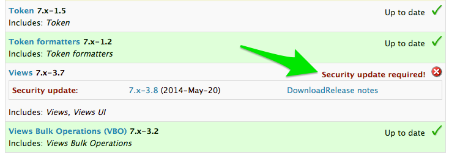
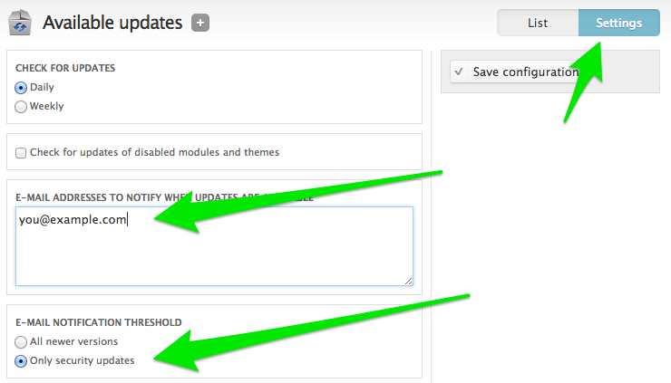

Securing Your Drupal Site
Advice for site builders and coders
Presented by
These slides: http://scor.github.io/drupal-security-2014/
@greggles Knaddison
- Contributed to Drupal for 8+ years
- Pretty interested in security
- Wrote Cracking Drupal
- CARD.com - mobile alternative to a bank
- https://www.card.com/careers
Stéphane "scor" Corlosquet
- 8 years with Drupal
- Drupal Security Team member
- RDF in core + contrib
- Definitive Guide to Drupal 7
- We're hiring
Security process

Precautions against XSS

Drupal 7 Update Manager
Drupal 7 Update Manager Notifications
Book on Security in Drupal
References

Sprints! On friday
- Help improve Drupal: Sprint with the community on Friday.
- We have tasks for every skill set.
- Mentors are available for new contributors.
- An optional Friday morning workshop will help you set up community tools.
- Follow @drupalmentoring
- austin2014.drupal.org/sprints